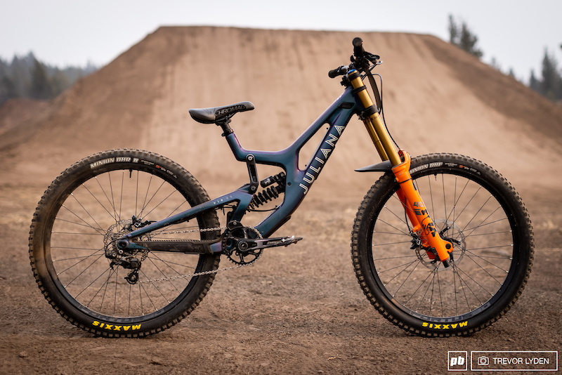
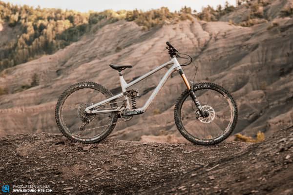

| Se caracteriza por utilizar bicicletas que ponen menor énfasis en el peso y mayor en el recorrido de las suspensiones, sin llegar a ser tan robustas, pesadas o con recorridos como las bicicletas de descenso (competitivas). Son bicicletas pequeñas, livianas y muy resistentes, especialmente construidas para parques de salto, donde el conductor debe ser muy experimentado y ágil. Estas bicicletas permiten el pedaleo en ascenso, sin embargo, no están construidas para recorridos largos. | |||||
| |
|||||
|   |
HAZTE CON LA TUYA |
||||